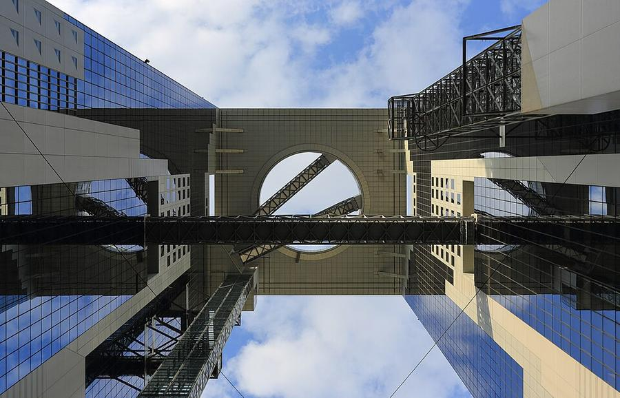
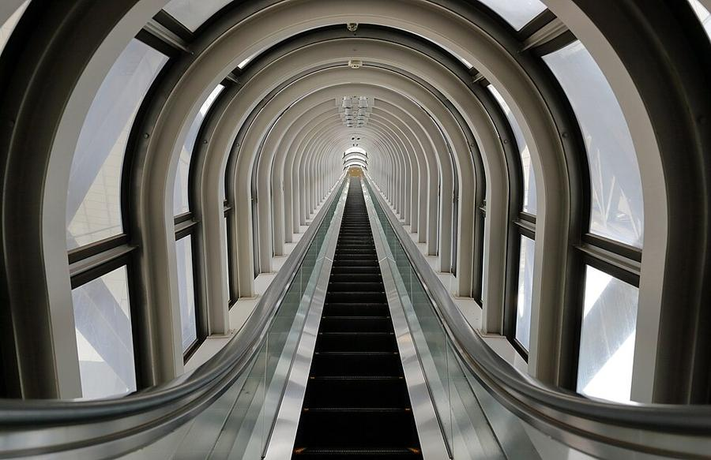
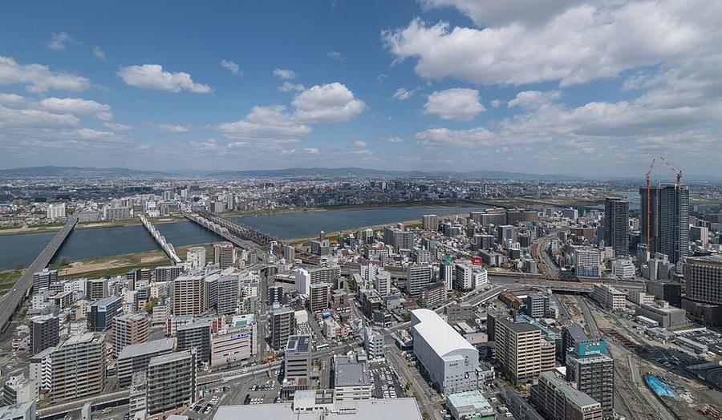

1Umeda Sky Building
梅田スカイビル 空中庭園展望台 · У отеля · Umeda и Kita
В плане на Сб 24.10 - смотреть день









Две 40-этажные башни (1993, архитектор Hiroshi Hara), соединённые на самом верху. Последний отрезок наверх - эскалатор в стеклянной трубе над пустотой между башнями.
Выше всего - открытая круговая площадка на крыше, 173 м: город на все стороны, на север - река Yodo. Ночные огни тебе не нужны, поэтому смысл - закат: прийти к ~16:40, уйти после 17:13.
| Часы | 9:30-22:30, вход до 22:00 |
|---|---|
| Вход | 2 000 ¥ |
| Выходные | без выходных |
| Наши даты | открыто 24-26.10 |
| На месте | 40-60 мин |
| Дождь | ⛅ часть под крышей, в дождь - частично |
Источник часов и цен: osaka-info.jp; официальный skybldg.co.jp с 22.10 на техработах, поэтому это сигнал, а не подтверждение
Как добраться от отеля
- От отеля пешком ~15 мин (1,1 км) на северо-запад, мимо нового парка Grand Green Osaka.
Рядом

2. Nakanoshima: общественный зал 1918 годаКрасный кирпич на острове между двумя реками

3. NakazakichoСтарые деревянные дома в 10 минутах от небоскрёбов, теперь кафе
Фото: Wikimedia Commons, автор и лицензия под каждым. Поезда: Yahoo!乗換案内 на 24-26.10.2026, пешие отрезки: OSRM. Часы и цены проверены 24.10.2026 03:16 JST. ← ко всем местам